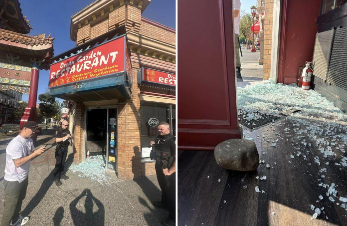
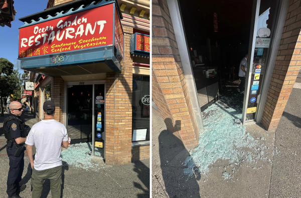
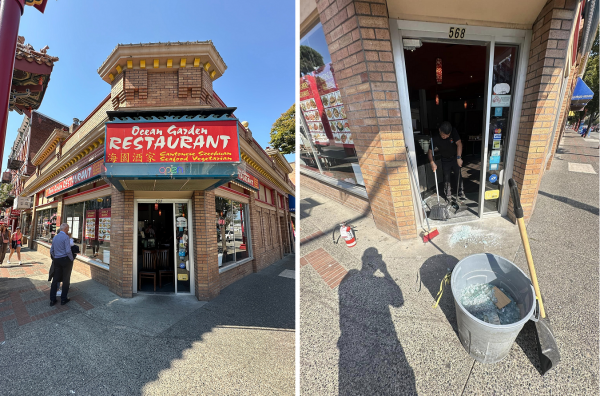

卑诗省一家中菜馆昨天两度遭贼匪光顾，上午先遭企图抢劫，疑犯在被警方逮捕后，竟于同日稍后回来制造另一灾劫，在店内燃放烟雾弹。警方解释是依例释放疑犯，事件引起了对相关法例的争议。
位于维多利亚市唐人街的海园酒家（Ocean Garden Restaurant）店主表示，周三（7日）早上接获警方来电通知其酒家遭刑毁，才发现上午被贼人光顾，匪徒打破了前门，导致店面玻璃尽碎，并企图抢走一批活蟹。
店主说：“是的，不是收银机，不是名酒，是我们的活蟹！”
幸好有途人发现出手制止，并即时报警吓走了该名偷蟹贼，疑犯其后被警方逮捕。

维多利亚警方周四证实，昨早约8时30分，一名男子闯入位于Fisgard Street街的海园酒家，警方接到报案，并在他逃离现场后将其擒获。
这名男子很快获释，他回到酒家并燃放一枚烟雾弹，当时店内约有30名食客。
当时，该男子并非被拘捕，而是在释放令下获释，释放的条件是他不可回到该酒家，而且要依期出庭应讯。
然而，警方于周四上午确认，该名男子已因烟雾弹的事件正式被捕，目前还押候审。
对于为何疑犯在第一次就逮后获得释放，警方解释是根据2019年颁布的联邦法例中所列明的克制原则来办事。
有关法例要求警方须在考虑了特定因素后尽快释放被告，这些因素包括被告出庭的可能性、会否对公众安全构成即时危险，以及可会影响公众对刑事司法制度的信心。
《加拿大权利与自由宪章》（The Canadian Charter of Rights and Freedoms）规定，所有人都有享受自由和无罪推定的权利。警方还被要求在执法过程中，考虑原住民或弱势社群的情况，以缓解“刑事司法制度对这些人造成的不成比例的影响”。
店方在社交媒体上发文称，该男子在早上的事件后不足4小时就获释，然后在酒家午市最忙碌的时候回来，投掷了一枚烟雾弹。店方指他在接受警方盘问时基本上承认了罪行，还说自己对出售活海鲜的食肆表示过不满。“但警方还是决定放走他，让他回来再犯罪。我们相信他是决心要让我们停业的，所以决定暂时不会提供或出售螃蟹。”
店方补充道，周三在花了整个早上清理善后，决定当天照常营业。尽管保险问题和事件带来的不便令人极为头痛，但对能够在没有业务损失的情况下继续营业感到感恩。
店主说：“我们很感谢整个唐人街社区及所有人给予我们的支持、同情和关怀，多谢你们一直以来的支持，让我们团结一起做得更好吧。”

图：Facebook
V20